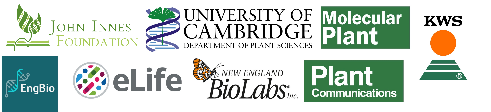
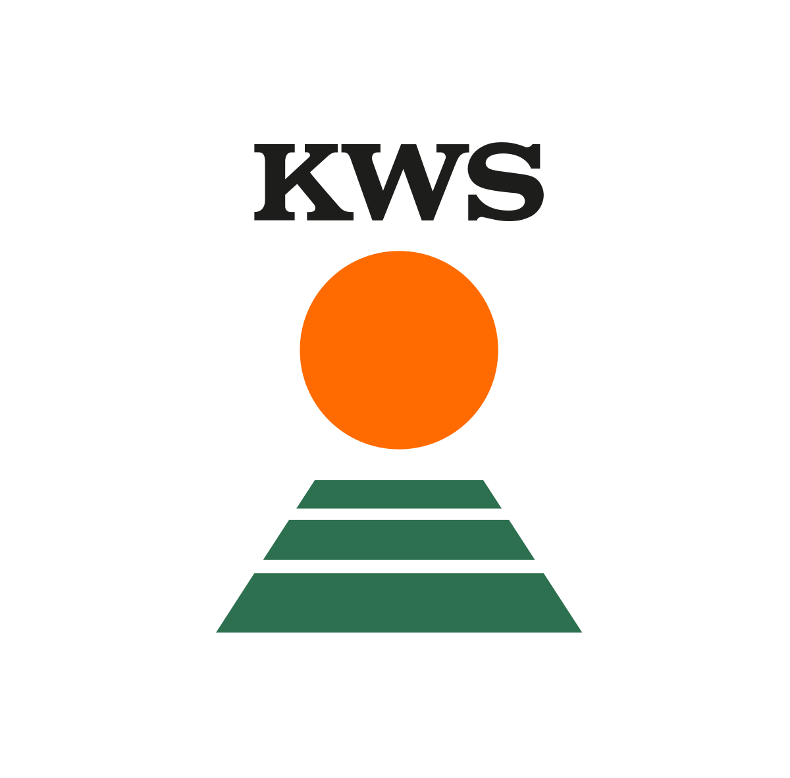

We would like to thank our sponsors for their generous contribution, without whom this event would not have been possible.

Independent, not-for-profit and supported by funders, eLife improves the way research is practised and shared. We’re committed to creating a future where a diverse, global community of researchers shares open results for the benefit of all. We’ve introduced a new publishing process where we will no longer make accept/reject decisions at the end of the peer-review process; rather, all papers that have been peer reviewed will be published on our website as Reviewed Preprints, accompanied by an eLife assessment and public reviews.Learn more at elifesciences.org/about.
Established in 1909, the John Innes Foundation’s mission is to advance the acquisition and application of knowledge about plants and microbes for societal, environmental and commercial benefit. It delivers this by supporting research, education, training and public engagement; and by encouraging agricultural innovation. Among much else, it is the primary sponsor of the prestigious JIF PhD Rotation programme at Norwich Research Park.

KWS is one of the world’s leading plant breeding companies. Over 5,000 employees in more than 70 countries generated net sales of around €1.5 billion in the fiscal year 2021/2022. A company with a tradition of family ownership, KWS has operated independently for 165 years. It focuses on plant breeding and the production and sale of seed for corn, sugarbeet, cereals, vegetables, oilseed rape and sunflower. KWS uses leading-edge plant breeding methods to continuously improve yield for farmers and plants’ resistance to diseases, pests and abiotic stress. To that end, the company invested more than €285 million last fiscal year in research and development.
More information: www.kws.com . Follow us on Twitter® at https://twitter.com/KWS_Group.